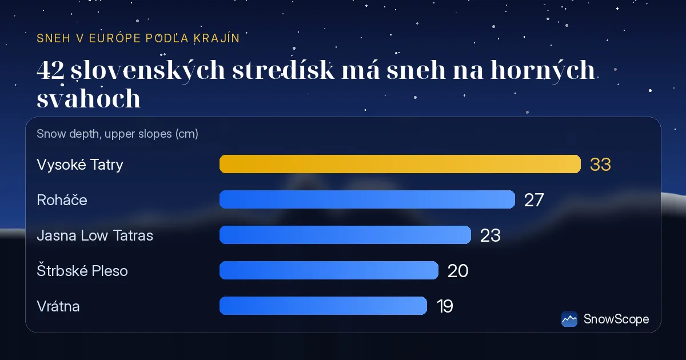

42 slovenských stredísk má sneh na horných svahoch
Sneh z začiatku novembra dosiahol 42 zo 107 slovenských lyžiarskych stredísk, pričom najvyššie vrcholy majú teraz slušné pokrytie. Vysoké Tatry vedú krajinu s 33 cm nameraným v nadmorskej výške 2182 m.
Pozrite si predpoveď snehu pre Vysoké Tatry v aplikácii SnowScopeVýška snehu, upozornenia a 3D mapa, zadarmo.
Ktoré strediská majú sneh teraz
Hranica snehu je na 1100 m, čo znamená, že nižšie strediská zostávajú väčšinou bez snehu. To je typické pre koniec novembra v Vysokých Tatrách a Malej Fatre, kde nadmorská výška viac záleží ako kdekoľvek inde v krajine.
Vysoké Tatry majú najviac snehu s 33 cm, nasledované Roháčom s 27 cm a Štrbským Plesom s 20 cm. Hrúbka snehu rýchlo klesá pod 1500 m nadmorskej výšky: v tej výške je priemer len 2 cm a pokrytie je na 61 percent. Pod 1000 m sa takmer nič nezaschytilo.
| Stredisko | Výška snehu | Nový sneh, 72 h | Ďalšie dni | Vrchol |
|---|---|---|---|---|
| Vysoké Tatry | 33 cm | 8 cm | 7 cm | 2 182 m |
| Roháče | 27 cm | 9 cm | 6 cm | 1 496 m |
| Jasna Low Tatras | 23 cm | 7 cm | 3 cm | 2 003 m |
| Štrbské Pleso | 20 cm | 9 cm | 6 cm | 1 822 m |
| Vrátna | 19 cm | 11 cm | 5 cm | 1 529 m |

Kde sú najlepšie podmienky
Vysoké Tatry a Malá Fatra zasiahol najťažší sneh v posledných troch dňoch. Obe oblasti zaznamenali 11 cm nového snehu v tomto období, čo je oveľa viac ako celoštátny priemer 8 cm. Nízke Tatry zaostávali s 7 cm, čo vysvetľuje, prečo Jasná Nízke Tatry má len 23 cm na svojom vrchole.
Roháč v Malej Fatre ponúka zriedkavú výhodu pre nižšie strediská: nahromadilo si 9 cm za 72 hodín a má celkom 27 cm. Jeho maximálna nadmorská výška 1496 m mu hrá do kariet. Vrátna, tiež v Malej Fatre, ukazuje 19 cm a dostala 11 cm čerstvého snehu, čo je rovnaká najvyššia miera vo všetkých menovaných strediiskach.

Hrúbka snehu podľa nadmorskej výšky
Nad 2000 m je sneh v priemere 28 cm a pokrýva každý svah. Medzi 1500 a 2000 m hrúbka klesá na priemerne 18 cm, ale pokrytie je stále úplné. Toto pásmo obsahuje väčšinu lyžiarskej prevádzky na Slovensku.
Pokles pod 1500 m je prudký. Medzi 1000 a 1500 m leží na zemi v priemere len 2 cm a pokrýva 61 percent svahov. Ešte nižšie sa takmer nič neudrží: pásmo od 500 do 1000 m ukazuje nulovú hrúbku a len 4 percent pokrytia. Skorá sezóna na Slovensku vždy vyzerá takto—terén nad 1500 m sa dá lyžovať, všetko ostatné nie.
Čo prinesie ďalšia aspoň jedna týždeň
Ďalší sneh prichádza. Vo štvrtok 26. novembra bude najsnežnejší deň ďalšieho týždňa s 6 cm v predpovedi. Menšie zrážky 7 cm sú možné v nasledujúcich troch dňoch spolu a až 10 cm do siedmich dní. To by malo posunúť hranicu snehu vyššie a vyplniť medzery v strednoaltitudínskom pásme.
Predpovede na úrovni stredísk ukazujú, že Vysoké Tatry a Roháč budú mať v nasledujúcich troch dňoch 7, respektíve 6 cm. Vrátna a Štrbské Pleso by tiež mali vzrásť o 5 a 6 cm. Aj skromný sneh pomáha skororočným strediskám nad 1500 m nájsť lyžovateľnú podložku.
Ako sa týždeň vyvíjal
Snehové pokrytie na Slovensku sa tento týždeň odrážalo, stúpalo a padalo s jednotlivými búrkami. Pred siedmimi dňami 4640 km² malo sneh; to sa zmenšilo na 2010 km² v polovici týždňa, kým nedávne zrážky ho vrátili späť na 2470 km² dnes. Vysoké Tatry vedú krajinu za posledné štyri dni s pevným pokrytím na 30–34 cm.
Celkový podiel bieleho ostáva tenký: len 13 percent mapovaného terénu Slovenska je pokryté snehom. Ale nad 1500 m je obrázok úplne iný—tam má 100 percent svahov sneh. Nadmorská výška je to, čo definuje slovenskú sezónu.
Čo čakať na svahoch
Skororočný sneh je krehký. Tenké pokrytie pod 1500 m znamená, že skaly sa môžu kryť pod povrchom; jazdy po značených tratiach a jazde opatrne, ak vás podmienky ťahajú nižšie. Nad 1500 m je podložka teraz dostatočne pevná na to, aby horné svahy Vysokých Tatier, Roháča a Štrbského Plesa mali ponúkať skutočné lyžovanie.
Pred jazdou mimo tratí si skontrolujte oficiálny lavínny bulletín Slovenska. Sneh z začiatku novembra sa stále sedimentuje a môže sa rýchlo posúvať. Počasie ďalšieho týždňa opäť zmení snehový kryt, takže sa podmienky rýchlo menia. Použite aplikáciu SnowScope na sledovanie hrúbky v zvolenom stredisku a pásme nadmorskej výšky skôr, než sa vydáte.
Tipy pre lyžiarov
- Lyžujte nad 1500 m: tam je hrúbka snehu a pokrytie spoľahlivé. Pod touto výškou sú skaly odkryté a sneh je málo.
- Vysoké Tatry, Roháč a Štrbské Pleso majú teraz najhlbší sneh. Naplánujte si návštevu v týchto troch stredierkách, ak vám na hrúbke záleží.
- Vo štvrtok 26. novembra bude najviac snehu v nasledujúcom týždni (6 cm). To je najlepší deň na loviaceho čerstvých stôp.
- Pred jazdou mimo tratí si skontrolujte oficiálny lavínny bulletín Slovenska, zvlášť na nový sneh prichádzajúci v nasledujúcich dňoch.
- Sneh z začiatku novembra je tenký a rýchlo sa sedimentuje. Pred odchodom si pomocou aplikácie skontrolujte hrúbku v zvolenom pásme nadmorskej výšky.
About these numbers
Resort snow depths are the deepest snow on the resort's upper slopes on the date shown; they are estimates for an area, not a measurement at one point. Forecasts can change. Always read the official avalanche bulletin before going off-piste.
Cite this report
For research, teaching or the press: the numbers and charts are free to reuse under CC BY 4.0 with this citation.
SnowScope (2026), 42 slovenských stredísk má sneh na horných svahoch, https://snowscope.app/blog/sk/2026/11/slovakia-resorts-with-snow-22-november-2026.html, accessed 2026-11-22
SnowScope (Atlas Labs). (2026, November 22). 42 slovenských stredísk má sneh na horných svahoch. SnowScope snow reports. https://snowscope.app/blog/sk/2026/11/slovakia-resorts-with-snow-22-november-2026.html
BibTeX
@misc{snowscope2026slovakiaresortswithsnow2,
author = {{SnowScope (Atlas Labs)}},
title = {42 slovenských stredísk má sneh na horných svahoch},
year = {2026},
month = nov,
howpublished = {\url{https://snowscope.app/blog/sk/2026/11/slovakia-resorts-with-snow-22-november-2026.html}},
note = {Published 2026-11-22 20:35 UTC; accessed 2026-11-22}
}· CC BY 4.0 · Methods, data and tools →
Vysoké Tatry: snow and temperature by height, this winter vs last (tools) →
Follow Vysoké Tatry
Zadarmo: správa, keď prichádza nový sneh, a predpoveď každé ráno.